Three processes
This lecture uses three words that are easy to confuse, so learn the difference now. is the physical and chemical breakdown of rock at or near the surface. It usually happens within a few tens of metres of the surface, because it needs air, water and often plants. is, in chemistry, the loss of electrons. In ore deposits it means that sulphide and carbonate minerals change into oxides and hydroxides when water with oxygen reaches them. is a change in a rock's minerals at low pressure, caused by fluids moving through the rock. It can happen anywhere the fluids go, at any scale, from a thin section to kilometres around a porphyry.
Why are these important? Each one changes what you see in the field. Weathered rock covers most of Australia and hides the geology below it. It rarely contains anything valuable, and it must be removed before open-cut mining. Oxidised rock can show where buried ore is (gossans) and where groundwater moved and collected. It can also be ore itself, for example iron ore, manganese ore, bauxite and the oxide parts of metal deposits. Alteration shows where hydrothermal fluid moved, often at the same time as metals were deposited. It also tells you the temperature, pH and mixing of the fluids. It is the most common tool for finding the direction to ore (a vector). But it can also turn hard rock into soft, weak material.
Weathering: breaking rock and dissolving it
Rock at the surface is destroyed in two ways, and they usually work together. Physical weathering breaks rock into smaller pieces without changing its chemistry. Examples are gravity on steep slopes, wind-blown sand that scrapes the rock, plant roots that push cracks open, and rock expanding and shrinking as the temperature changes. Chemical weathering dissolves the minerals or changes them by chemical reactions. Water, climate and organic acids from dead plants drive it. In dry places physical weathering is stronger. In warm, wet places with many plants, chemical weathering is stronger.
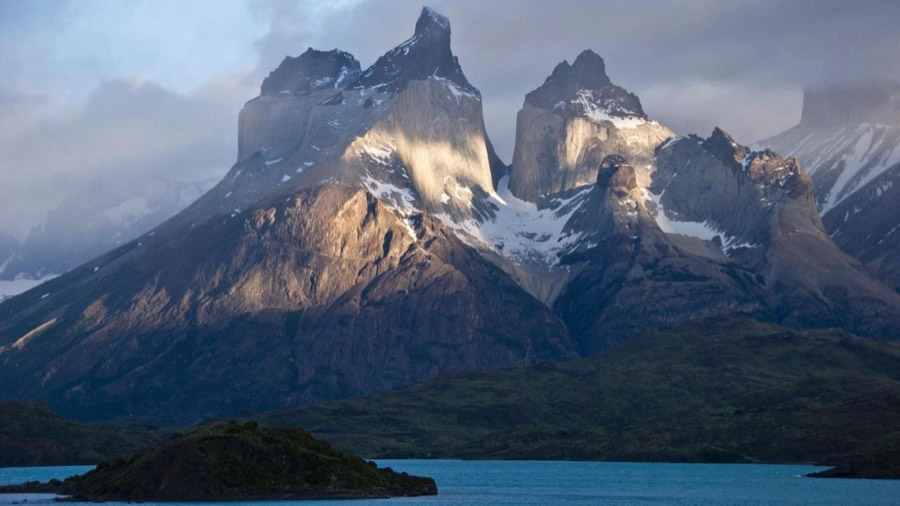
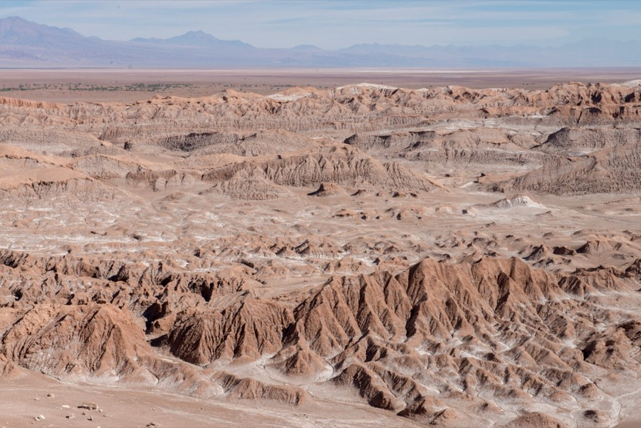
Which landscape has more chemical weathering? In the other landscape, what process does most of the weathering?
Show what I see
- A: glaciers, snow, rain, a lake and some plants, on very steep mountains that are still rising.
- B: no plants, no water, sharp ridges shaped by wind, pale bare rock.
A has much more chemical weathering, because it has water. It also has strong physical weathering from glaciers, gravity and steep slopes. B has almost only physical weathering, from wind blowing sand. Some parts of the Atacama have had almost no rain for millions of years. This is why minerals that normally dissolve in rain, such as nitrates, are still stable there. The other extreme is Antarctica. Everything is frozen and there is no liquid water, so there is almost no chemical weathering.
What chemical weathering removes
This is the key idea, so read it slowly. Chemical weathering dissolves the first: sodium, potassium, calcium, magnesium, iron, metals, and often strontium. The rock that is left becomes richer in the : silicon, aluminium and titanium. Nothing is added. The immobile elements simply become a bigger part of a smaller amount of rock. This has two results. First, dark rocks become pale, because iron (the main colouring element) has been removed. This is called . Second, in the strongest tropical weathering, even silica is removed and only aluminium hydroxide is left. This is how forms. Bauxite is mostly white , often coloured pink or red by very fine hematite.
Weathering machineset the conditions
This is a teaching model, not a real geochemical program. The composition table shows how the rock's composition changes as mobile elements are removed.
Imagine a basalt that starts with 15 wt% Al2O3. Chemical weathering dissolves and removes 60 per cent of the rock's mass, but all the aluminium stays.
You have concentrated aluminium 2.5 times without adding any aluminium. If you also remove the silica, you reach bauxite grades. This is the same concentration factor idea from Lecture 1. The difference is that the concentration happens by removing other elements, not by adding metal.
What controls the speed and depth of weathering
Five things control it, and you can test each one in the machine above. Composition and grain size: soluble minerals (halides, carbonates, sulphates, sulphides) weather fastest. Coarse-grained rocks weather faster than fine-grained rocks, because water can enter along the long boundaries of each big grain. Structure: bedding, joints, fractures, foliation, faults, shears and rock contacts all let water in. This is also why you rarely see a clear geological contact in the field: contacts are weak planes, so they weather first. Topography: steep relief means more physical weathering. Climate: heat makes reactions faster, liquid water is essential, large temperature changes between day and night crack rock (in the desert you can sometimes hear it), and wind wears rock away. Vegetation: thick plant cover keeps the ground wet and releases organic acids. So warm, humid forests have the deepest weathering. Different plants produce different acids, and scientists are still studying this.
Karst (caves and sinkholes in limestone) is the best example of a landscape made by chemical weathering. Weakly acidic rain and groundwater dissolve calcite. Rain has become more acidic since the industrial revolution, so karst has probably been dissolving faster. In one groundwater study in north Queensland, smoke from fires used to clear land in Indonesia and Malaysia lowered the rainwater pH to below 3. Below the water table, almost no weathering happens. But water tables move up and down all the time, so the zone of weathering also moves.
Reading weathered rock
Weathered rock looks strange until you know what to look for. Do these tasks as you would on a field trip: describe first, then interpret.
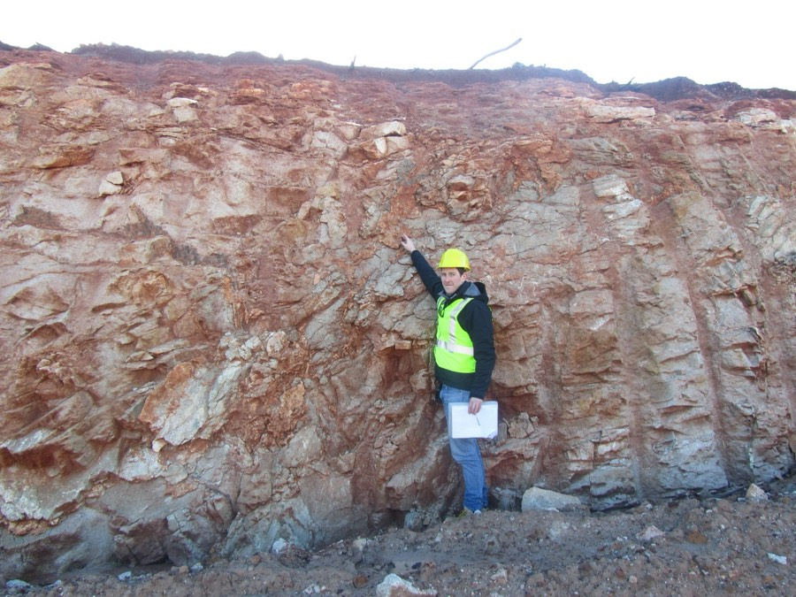
This was once a hard granite. List three things in the photo that show it is deeply weathered.
Show what I see
- Many joints and fractures cut the whole face. Water flowed along them.
- The rock is pale (bleached) overall: iron has been removed from the rock.
- Red-orange hematite stains are concentrated along the fractures, where that iron was deposited again.
In the close-up (slide 17), only small pieces of fresh granite are left. The rest is quartz and clay, soft enough to dig. Weathering moves inwards from every fracture, so the last fresh rock is always in the centre of the blocks.
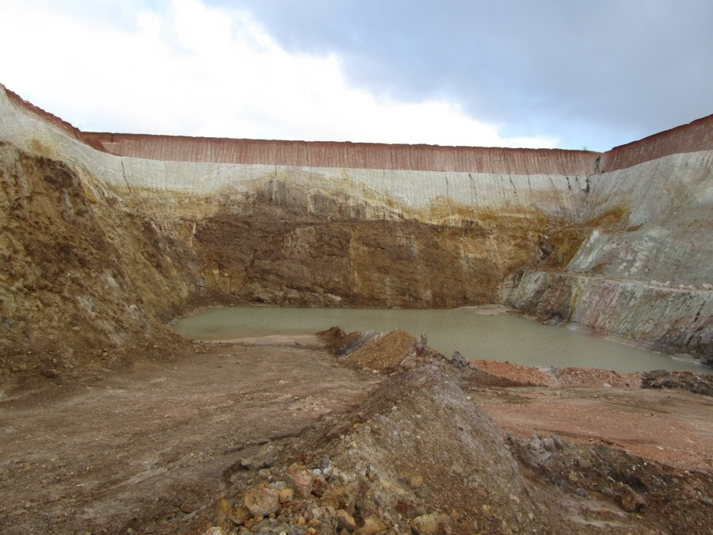
Describe this pit wall from top to bottom. What are the layers, and what did water do to make them?
Show what I see
- Top: red-brown soil and weathered rock, rich in iron.
- Middle: a pale, bleached zone. You can still see bedding, but the iron has gone.
- Bottom: brown, iron-altered limestone, and then fresh rock.
The water table moved up and down through this profile many times. Each time, it carried dissolved iron. It removed iron from the bleached zone and deposited it above and below. Iron is the element that groundwater moves in the most visible way. Also notice that the iron is not spread evenly: a fault through the pit controls where the high-iron bands are.
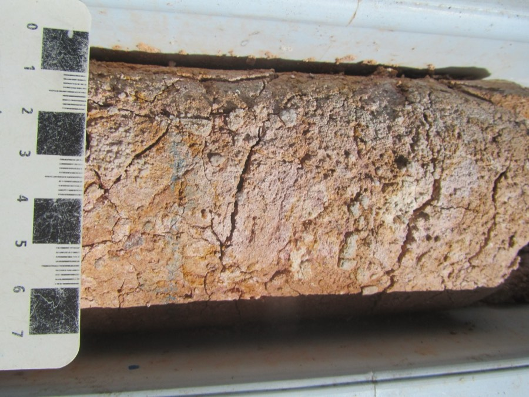
This core is from 18 m down a drill hole. What rock was it?
Show what I see
You cannot tell. No structure is left at all, only kaolinite and hematite. That is the point of this task. In Western Australia you can drill through more than 100 m of strongly weathered material before you reach anything that looks like rock, because groundwater has been weathering the profile for millions of years. To find out what the original rock was, you use the chemistry of immobile elements (explained later in this lecture).
Minerals you will often find in weathered rock
| Mineral | What it is | Why it is there |
|---|---|---|
| Quartz | SiO2 | It hardly reacts, so it survives |
| Chalcedonic silica | microcrystalline SiO2 | Left when ultramafic rocks lose their Mg and Fe |
| Kaolinite (kaolin) | Al clay | The most common weathering clay by far; forms from feldspars |
| Hematite | Fe2O3 | Iron oxide that forms where there is plenty of oxygen |
| Goethite | FeO(OH) | Iron oxyhydroxide; it contains hydrogen, so it forms where water collects |
| Jarosite group | K-Fe sulphates | Acidic weathering of sulphides, with a lot of sulphate |
| Montmorillonite | smectite clay | Clay that swells; found in less leached profiles |
| Gibbsite, boehmite | Al hydroxides | Very strong leaching: bauxite |
| Anatase, rutile | TiO2 | Titanium is immobile, so it stays |
Every mineral in this table is an end product. This means it does not break down any further. Remember this idea. slide 21
- Hematite: oxygen freely available. Goethite contains hydrogen, so it forms where water pooled.
- Jarosite: acidic, sulphate-rich weathering of sulphides.
- Kaolinite is by far the commonest weathering clay; gibbsite and boehmite mean extreme leaching (bauxite).
- Pale, bleached rock has lost its iron.
Oxidation: why sulphides rust and make acid
Oxidation is the loss of electrons, and reduction is the gain of electrons. For ore deposits, the main idea is simple. Sulphides form deep underground, in reduced conditions with no free oxygen. When they come close to the surface and meet water with oxygen, they are no longer stable. They react: the iron becomes oxides and hydroxides, and the sulphur becomes sulphate. The minerals that oxidise most often are the iron minerals: pyrite (FeS2), pyrrhotite (Fe1-xS) and the carbonate siderite (FeCO3).
A useful rule: hematite means flowing water and plenty of free oxygen. Goethite contains hydrogen, so it needs water that stays in one place. It shows where water collected, for example at a water table. So the iron oxides in a profile are a map of old groundwater. slide 23 and lecture recording
Pyrite to acid, one step at a timestep 0 of 3
Oxidise one mole of pyrite (about 120 g, a small handful) in 1000 litres of unbuffered water. See what happens.
Start with clean, neutral water and a pyrite crystal.
The total result: each mole of pyrite releases four moles of H+. It also leaves an orange-brown iron hydroxide, which slowly changes into goethite. This is , one of the biggest environmental problems in mining. The same chemistry also forms a gossan. Rock with a lot of carbonate can neutralise the acid. Rock with a lot of quartz cannot.
What controls oxidation
Four things control oxidation. (1) A supply of oxygenated water, which is water with dissolved oxygen. Without it, nothing happens. (2) Minerals that can oxidise, such as sulphides and carbonates. (3) Structure, porosity and permeability, such as fractures, bedding, joints, foliation and faults. (4) Climate: rainfall, temperature, and especially a water table that moves up and down. slide 26
Gossans: the rusty cap on a sulphide body
A is what is left of a sulphide body at the surface after oxidation. It is rich in iron and is made mostly of goethite, hematite and ferrihydrite. It also contains secondary minerals made by the oxidation, but only a little of the valuable sulphides (galena, sphalerite, chalcopyrite). Gossans are in the oxidised zone above the water table. They were the first ores that humans mined, because they are at the surface and easy to see. A gossan can show that a deposit is below it, but not always.
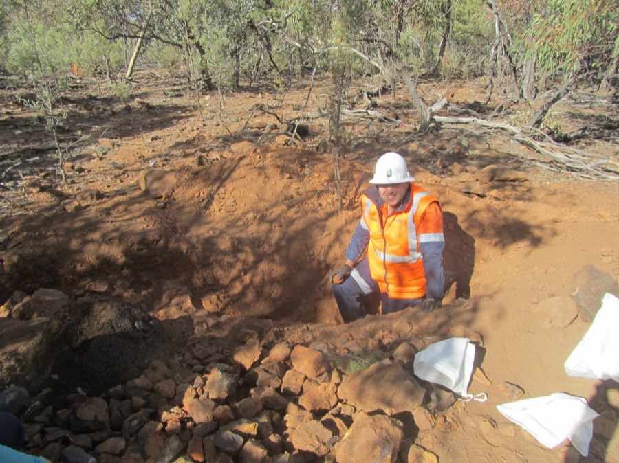
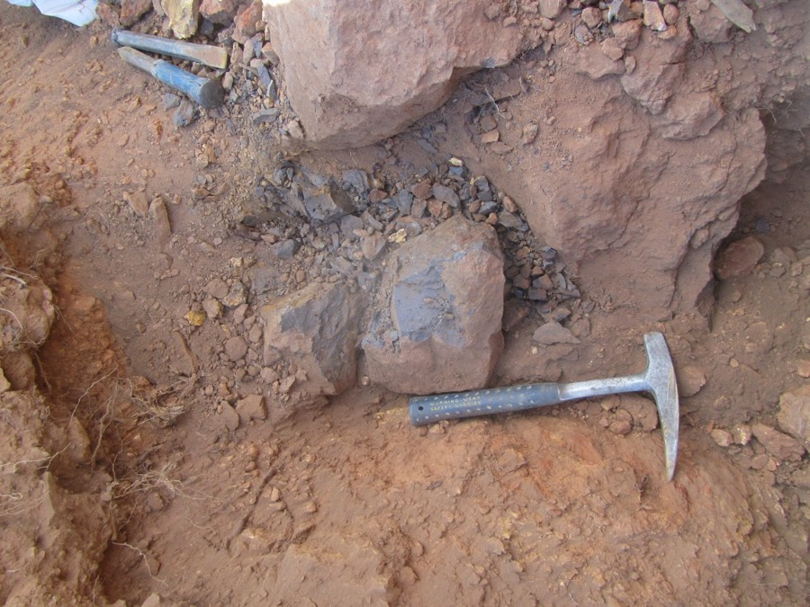
No prospector or miner ever recorded this outcrop. Later, geologists found visible gold all through it, but no sulphide was left at all. Why did the gold survive when everything else oxidised?
Show the reasoning
Gold does not oxidise. The pyrite or pyrrhotite that once contained the gold changed completely to goethite. But the gold grains stayed. They even became relatively richer, because the rock around them lost mass. Two lessons: there are still undiscovered gossans, even in well-explored districts like Cobar. And you must assay a gossan sample for metals; you cannot judge it by how it looks.
A gossan is a good sign, but it does not always mean that there is an economic ore deposit below it. Most of a gossan comes from oxidised pyrite, with much less of the valuable sulphides. slide 27 In the lab, look for a texture: the Pyrite Hill specimens include cellular boxwork gossan made of goethite and quartz. lab specimen sheet
The supergene profile: where copper becomes richer
Now combine these ideas into the most important picture in this lecture. Start with a primary copper sulphide body (chalcopyrite) and let rain soak into it for a long time. Above the water table, conditions are oxidising. Below the water table, conditions are reducing. Copper dissolves in the oxidising zone and moves down with the water. At the water table it meets reducing conditions and is deposited again as copper-rich sulphides. The water table is the boundary between oxidation and reduction, so metals collect there. This richest layer is the zone.
From top to bottom the profile has: a gossan; a leached zone where the metal has been removed; an oxide zone with brightly coloured copper minerals (malachite, azurite, cuprite, chrysocolla, native copper); the enrichment blanket at the water table, with chalcocite, covellite and bornite; and below that, the unaltered primary chalcopyrite. Run the simulator and watch the profile form.
Supergene simulatorcycle 1
Tap a zone in the picture to see its minerals.
The grades are examples chosen to show the pattern. They are not from a real deposit.
Why the blanket is so rich
Look at how much copper each mineral contains. The enrichment minerals contain more copper per crystal than primary chalcopyrite. calculated from formulae
At Girilambone, only the supergene chalcocite (Cu2S) blanket was worth mining. The oxide zone above it and the primary sulphide below it were both too low grade. Supergene zones are usually only a few metres thick. Some deposits have none, and some have up to about ten metres. So the blanket can decide whether a project succeeds or fails.
Native copper sounds like great ore, but in a modern mine it causes problems. It is soft and malleable, so it does not break in the crusher. Instead it spreads out and blocks the crusher. So mines put it in a separate stockpile. Heap leaching also works badly with it, because pure copper uses up a lot of acid. The usual solution is to mix it slowly with lower-grade ore.
Most oxide zones are only a few metres thick. But if there are several weathering periods, millions of years apart, the oxide zone can become more than a hundred metres thick. Broken Hill had at least three weathering periods. Its oxide zone was extremely rich, with masses of native silver and chlorargyrite (AgCl) that weighed more than a tonne. The "Drop the water table" button in the simulator copies this process.
- The water table is the oxidation-reduction boundary.
- Copper leached from above reprecipitates there as chalcocite, covellite and bornite: the supergene blanket.
- Gossan on top, leached zone, oxide zone, blanket, then primary sulphides.
Deep oxidation: faults can take oxygen deep
Oxidation normally stops at the water table. A fault can change this. Water with oxygen can flow down a fault plane for millions of years. It can oxidise rock hundreds of metres below the normal oxide zone. So in one drill hole you can pass through fresh sulphide and then reach oxidised ore again.
Core tray · Gladstone Hill, Drake Goldfieldlog all four
Here are four pieces of core from one hole, in order of depth. Choose the zone for each one. One of them is a trick question.
Tsumeb is a pipe-shaped orebody in limestone and dolostone. It had a normal oxide zone from the surface down to Level 11. Below that was fresh sulphide. Then there was a second oxide zone from Level 24 to Level 35, hundreds of metres deep. It formed because a fault zone let water with oxygen flow down for millions of years. Because of this deep oxidation, Tsumeb produced tens of thousands of world-class specimens of secondary minerals.
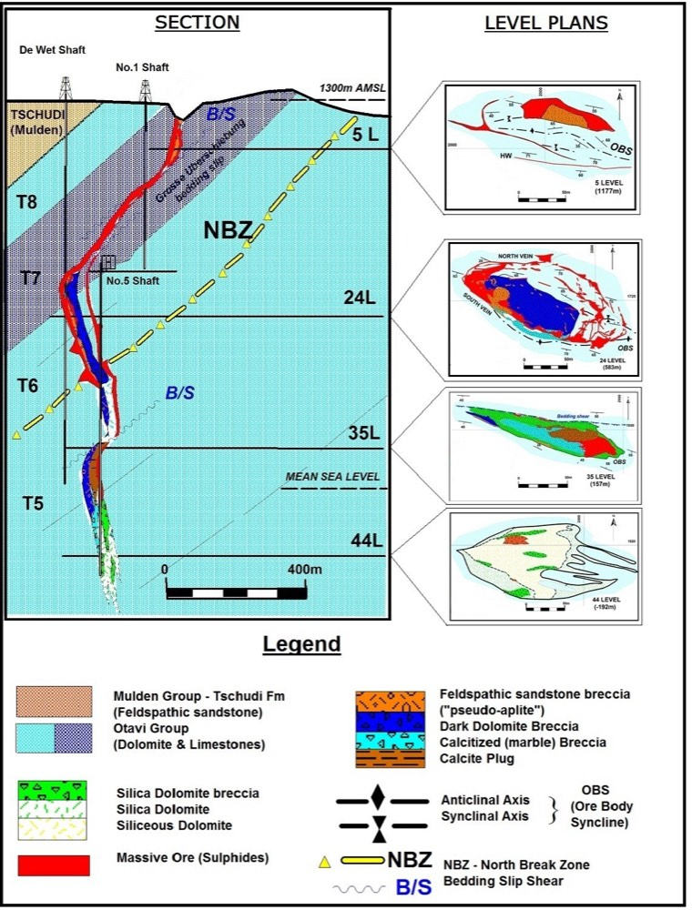
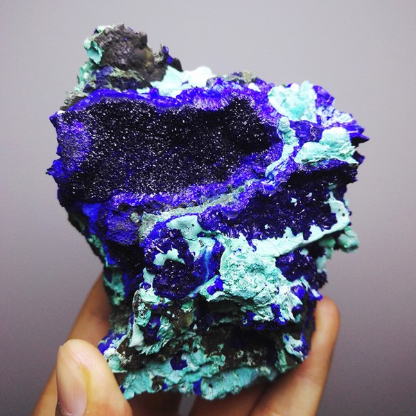
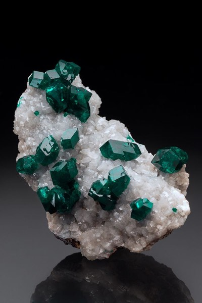
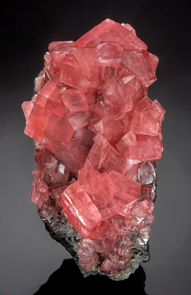
All three are secondary minerals from the oxide zone. Which metal does each one contain? Why is C pink?
Show what I see
- A: azurite (deep blue) with malachite (green). Both are copper hydroxyl carbonates.
- B: dioptase, a copper silicate with a very bright green colour. The dioptase from Tsumeb is among the best in the world.
- C: smithsonite, a zinc carbonate. Zinc has no colour of its own; the pink colour comes from a small amount of cobalt.
In an oxide zone, bright colours (blue, green) usually mean copper. Colourless or white minerals are usually lead or zinc carbonates and sulphates (cerussite, smithsonite, anglesite), unless a trace element colours them.
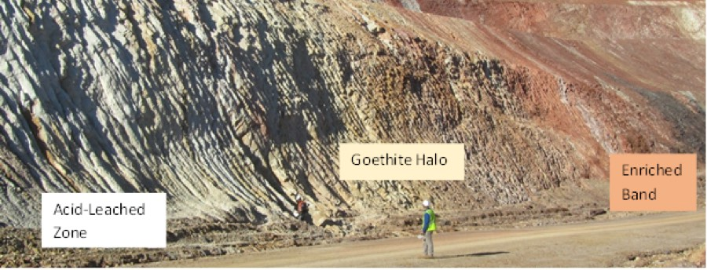
At Mount Kelly, only the oxide zone was mined. Which labelled band was the ore? How do you think it was processed?
Show the answer
The ore was the darker enriched band on the right. It is rich in hematite and copper oxides and carbonates (malachite, azurite). The acid-leached zone has lost its metal. The goethite halo shows where groundwater moved iron around it. The ore was crushed, piled on a pad and sprayed with acid for a few months. Then the solution with the dissolved copper was pumped away. This is called , and it is one of the simplest metallurgical methods. The deposit is where the Mount Kelly Fault meets the regional McNamara Fault. The mineralised band is about 500 m long along strike.
Alteration: fluids change the rock
Alteration is a change in a rock's minerals at low pressure. It is caused by fluids moving through the rock, or by oxygen. Hot hydrothermal fluid, which is often acidic, reacts with the minerals it passes. It adds some elements and removes others. Feldspars change to clays or micas. Ferromagnesian minerals change to chlorite and epidote. The rock can gain silica, potassium or sulphur, and lose sodium, calcium or iron. Alteration happens at every scale, from microns to kilometres. Around ore deposits, it can be one metre wide next to a vein, or about two kilometres wide around a porphyry. This is why alteration is the most common vector to ore: the alteration halo is much bigger than the ore.
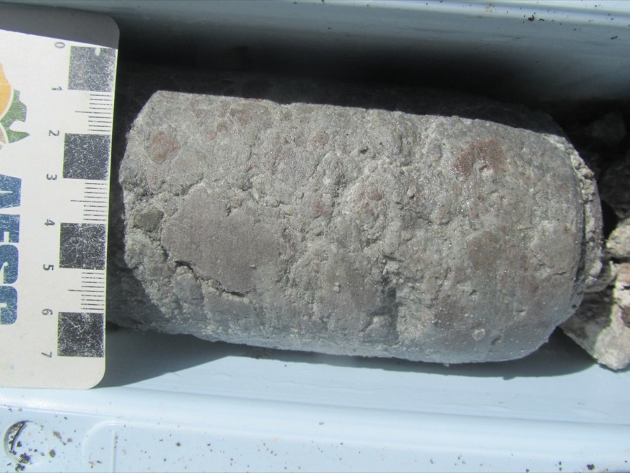
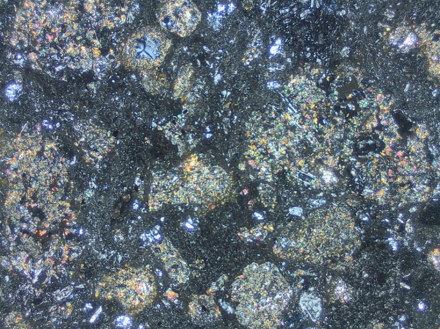
In A, what happened to the feldspars? In B, the bright mineral with high interference colours is a common alteration mineral. Which mineral is it? Did it form at a higher or lower temperature than the alteration in A?
Show what I see
A: all the feldspars have changed to clay, because acidic hydrothermal fluid attacked them. The core is pale, chalky and soft. B: the bright mineral is epidote. Epidote forms at higher temperatures than clay (argillic) alteration. So these two rocks show two very different fluid temperatures, and you can tell this from the minerals alone.
Four kinds of alteration
At the Hera mine in the Cobar Basin, there is a gold lode worth tens of millions of dollars that will probably never be mined. Nobody checked the mineralogy before they dug a tunnel towards it. The host rock had strong chlorite and talc alteration. It was much too weak to support underground tunnels. So alteration does not only guide you to ore. It also decides whether you can mine the ore safely. Always study the mineralogy first.
Why alteration matters
Alteration shows that hydrothermal fluid moved through the rock. It often happened at the same time as metals were deposited. It records the temperature, pH and pressure of the fluid. It can show where different waters mixed. For example, cool, neutral rainwater may meet hot, acidic hydrothermal fluid, and in epithermal systems this often causes gold and silver to be deposited. And alteration can make the host rock much weaker, as the Hera example shows.
Alteration assemblages: each name tells you the temperature and pH
Each type of alteration is named after its group of minerals (its assemblage). Do not just memorise them as a list. Learn what each group tells you about the fluid.
| Assemblage | Key minerals (low temperature) | What it tells you |
|---|---|---|
| Propylitic | chlorite, epidote group, albite, carbonate, pyrite | Far from the centre (distal), cooler, near-neutral fluid. The rocks become green. The rock gains Ca, Na and Fe. The pyrite formed early and is usually not related to the ore. |
| Phyllic (sericitic) | quartz, muscovite/sericite, pyrite, chlorite | Acidic fluid that destroys feldspar. The rock is pale and often has a lot of pyrite. Also called sericitisation. |
| Potassic | K-feldspar, biotite, muscovite, sericite, quartz (+ magnetite at higher T) | Hot fluid, close to magmatic, that adds potassium. It forms the core of porphyry systems. |
| Argillic | kaolinite, dickite, muscovite, sericite, montmorillonite | Clay alteration from acidic, cooler fluid. |
| Advanced argillic | quartz, alunite, pyrophyllite, dickite, diaspore, zunyite, opaline silica | Very acidic fluid, often near the top of epithermal and porphyry systems. |
Be careful with a few things. Quartz is in almost every assemblage, so quartz alone tells you nothing. is not a mineral name. It is a field name for fine-grained white mica (muscovite) with quartz. You will also see phengite, which is a type of muscovite, and dickite, which is the higher-temperature polymorph of kaolinite. At high temperature, each assemblage has an equivalent made of garnet, pyroxene, amphibole, sillimanite, kyanite, cordierite and other minerals. These rocks look much more like metamorphic rocks than hydrothermally altered rocks. slides 45 and 48
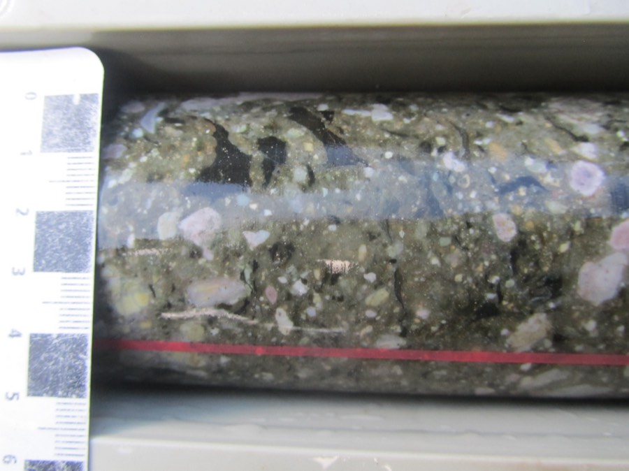
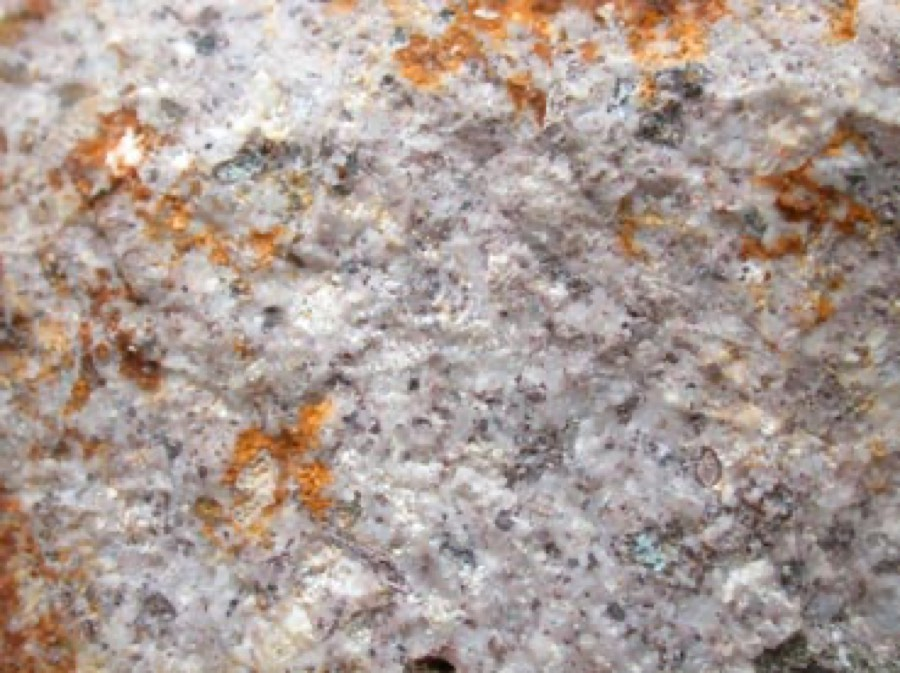
Name the alteration in each rock. Use only the colour and the minerals you would expect to find.
Show what I see
A is propylitic. The green colour comes from chlorite and epidote, and you would expect some scattered pyrite. B is phyllic. It is pale because the feldspar and ferromagnesian minerals have changed to fine white mica and quartz. The orange spots are where pyrite has weathered to iron oxide. A simple rule: green rock means propylitic, so look for pyrite.
Name that alteration0 / 6
What controls where alteration happens and how strong it is
Where alteration happens depends on several things. Primary controls are the composition of the host rock, its structure, porosity and permeability, how reactive the rock is, and how complex the geology is. Secondary controls are later faults and fractures, and secondary porosity. The fluid itself also matters (its pH, composition and volume), and so does overprinting by later fluids. How strong the alteration is depends mainly on three things. First, how reactive the host rock is: rock with carbonate reacts much more than rock rich in quartz. Second, permeability, especially secondary permeability from fracturing. Third, the volume and type of fluid. A low-pH fluid attacks rock much more strongly. slides 49 and 50
Zoning: how alteration maps a hydrothermal system
Around a hydrothermal system, alteration forms zones. This is because the temperature and the fluid chemistry change with distance from the source. If you can recognise the zones, you can tell which direction the centre of the system is. You need to know two classic models in detail.
Porphyry copper-gold
Press play to watch the zones form as the intrusion releases fluid. Then tap any zone to read about it.
Porphyry alteration zoningclassic model
Remember this pattern. A potassic core (quartz, K-feldspar, biotite) sits above the unaltered porphyry. Inside the potassic zone there is a low-grade core, which is usually not mined. The ore shell (1 to 3 per cent chalcopyrite, with the gold) is around the top of the intrusion (the cupola), at the edge of the potassic zone. Next is a phyllic zone (quartz, sericite, pyrite). It contains a pyrite shell with about 10 per cent pyrite and no ore. Outside that is a much wider propylitic halo (chlorite, epidote, carbonate, adularia, albite) with about 2 per cent pyrite. Advanced argillic alteration is at the top. There are also distal copper-lead-zinc-silver-gold veins out in the propylitic zone. This last point is important: in a porphyry district, do not only look for the porphyry. slide 57 and lecture recording, 18 Sep
Vector hunt · find the ore shell8 samples left
A porphyry is buried somewhere under this map. Each tap is a surface sample, and it tells you the alteration type. Use the zoning to move inwards. Try to hit the ore shell before you run out of samples.
VMS (VHMS)
On the seafloor, most of the alteration is in the footwall, because the hanging wall rocks were deposited after the ore. Under the massive sulphide there is a feeder pipe. Its core is very iron-rich chlorite and sericite with thin sulphide veins (stringers). These stringers usually contain chalcopyrite, not lead or zinc, and are sometimes rich enough to mine. Directly under the massive sulphide there is quartz with iron-rich chlorite. Around the outside there is magnesium-rich chlorite. So the chlorite composition is a vector you can see: iron-rich chlorite is dark green, and magnesium-rich chlorite is almost colourless. Carbonates show the same pattern: Mg-rich far away, Fe-rich near the ore. Barium is highest above the ore. Manganese and iron oxide deposits and barite form on the seafloor away from the vents. So if you find barite, you are in the right system, but still far from the ore. slides 58 and 61, lecture recording 18 Sep
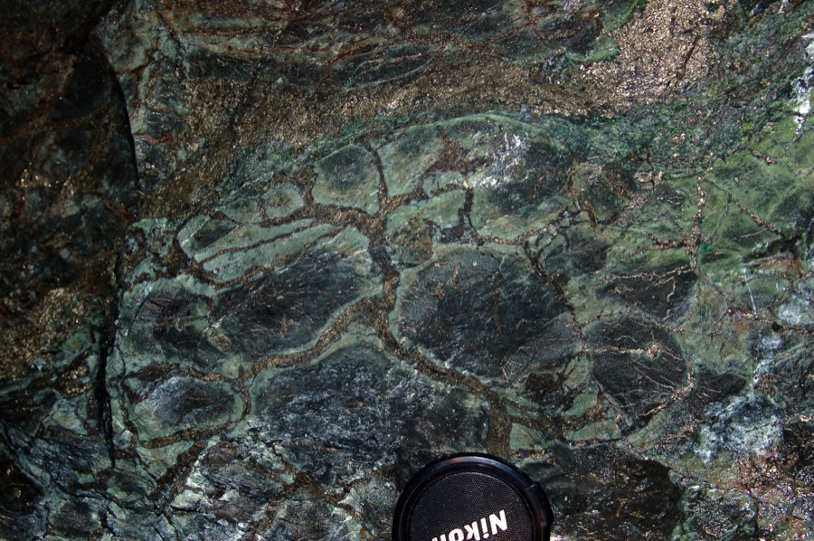
These are Archaean pillow basalts, more than 3 billion years old. Where did the sulphide go first, and why there?
Show what I see
The sulphide first replaced the edges between the pillows and filled joint cracks, because these are weak planes that fluid can enter. Strong chlorite alteration formed around the pillow edges, where fluid flow was weaker. Closer to the vent, the fluid flow was strong enough to bleach the basalt and replace whole pillows with chalcopyrite and pyrite. This is a replacement deposit: you can see the sulphide replacing the rock from the outside inwards.
Real systems are more complicated than these diagrams. There may be several intrusions or eruptions over a long time, and several fluid events. Later alteration can overprint earlier alteration. Metamorphism, deformation, faulting, weathering and erosion all mix up the simple zones. Use the models to make predictions. Then use the rocks to check where your predictions are wrong.
- Potassic core: quartz, K-feldspar, biotite (low-grade centre usually not mined).
- Ore shell: 1 to 3% chalcopyrite with the gold, at the edge of the potassic zone.
- Phyllic: quartz, sericite, pyrite; pyrite shell about 10% pyrite, no ore.
- Propylitic halo: chlorite, epidote, carbonate, adularia, albite, about 2% pyrite. Advanced argillic on top.
- Green chlorite-epidote-carbonate rock: propylitic, far from the core.
- Pale quartz-sericite-pyrite rock: phyllic.
- Pink K-feldspar and dark biotite: potassic, close to the core.
Measuring alteration: from core to numbers
Your eyes are the first tool, but they are not enough. A proper alteration study works at every scale, from the deposit to the microscope. Thin sections show the mineral groups. Most importantly, they show overprinting relationships, which tell you which alteration came first. identifies fine-grained clays and micas that you cannot see clearly under the microscope. Quantitative XRD can even measure how much illite and how much muscovite there is, and how crystalline the illite is. Spectroscopy identifies clays and chlorites quickly. For cryptic alteration, you need chemistry: ICP-MS and XRF in the lab, and in the field.
Mining companies use pXRF all the time. It is excellent for copper, lead and zinc. It is poor for rare earths, not very good for silver unless there is a lot of it, and useless for gold. Know the weaknesses of your instrument before you trust its numbers.
You can also date alteration directly. You can use K-Ar or Ar-Ar dating on illite, muscovite or adularia, and now also U-Pb dating on epidote-group minerals. If the alteration formed at the same time as the mineralisation, this gives the age of the ore-forming event, not just the age of the host rock.
The alteration box plot
For VMS systems, there is a simple way to measure how strong the alteration is, using only whole-rock chemistry. The (AI) measures how much feldspar and volcanic glass have been destroyed and replaced by sericite and chlorite:
The (CCPI) measures how much chlorite, Fe-Mg carbonate and pyrite have grown. Plot the two indices against each other. Altered rocks move up and to the right on the plot. Load the real Cowley Hills samples, and then change the oxide values yourself.
AI vs CCPI plotterload the three samples
The diagonal line is a simplified boundary between unaltered and altered rock. In reality, the boundary depends on the rock type. The preset oxide values were chosen to give the AI and CCPI reported for each sample.
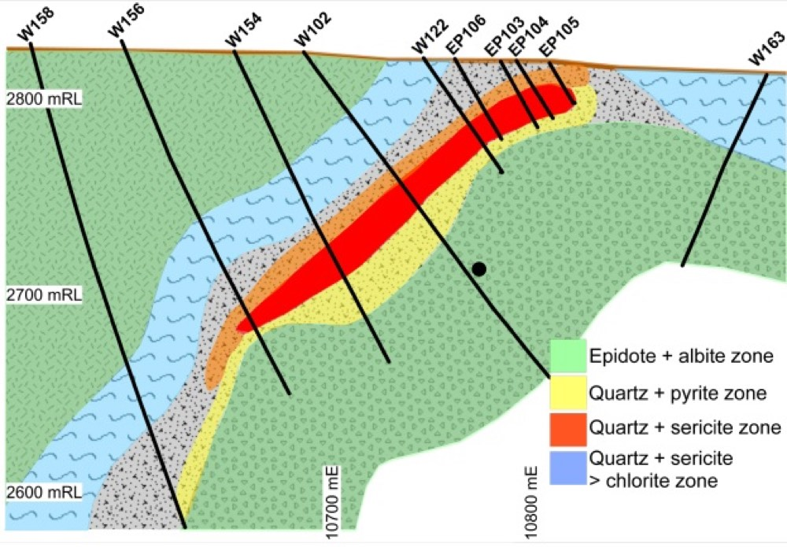
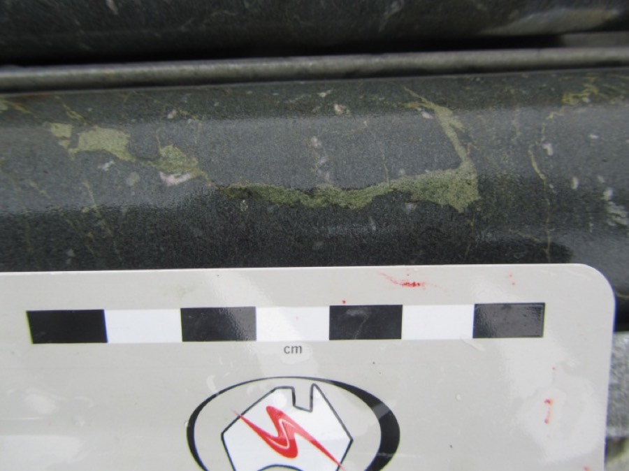
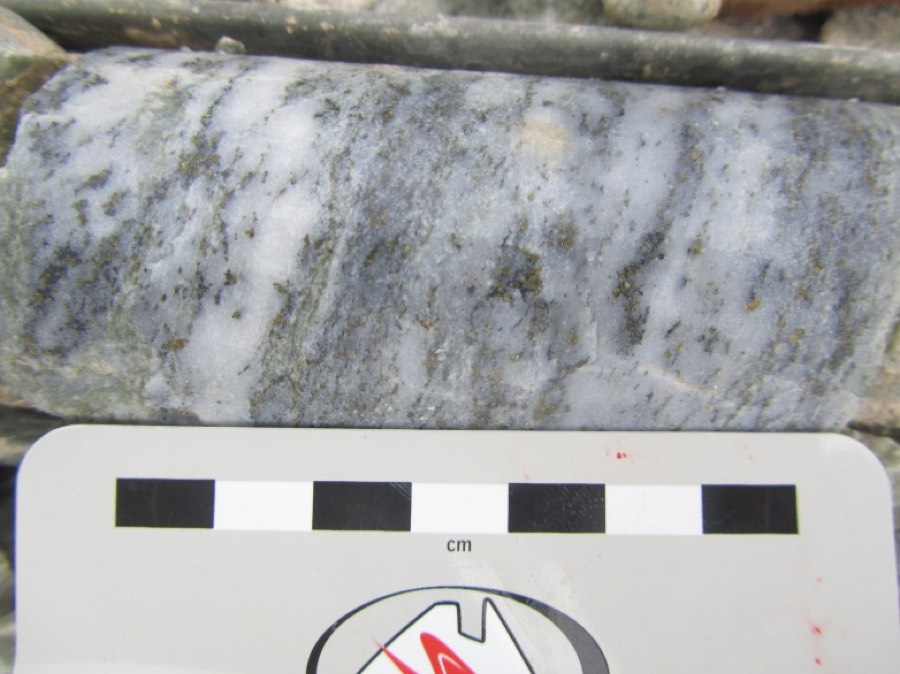
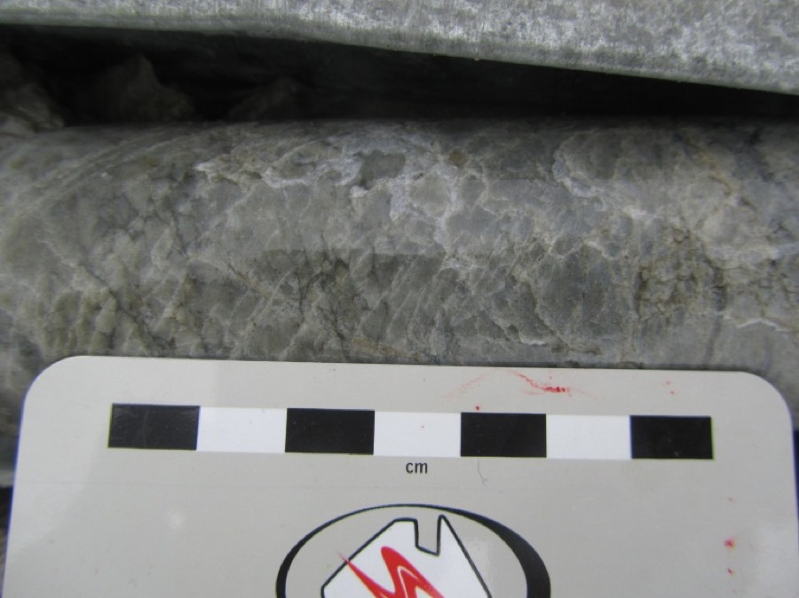
Describe each core in one line. Then predict what happens to AI, sodium and barium as you go from 1 to 2 to 3.
Show what I see
- 1: dark basalt with patches of epidote, chlorite and albite. In thin section you can still see the original basalt texture. Pyroxene has changed to epidote and chlorite, and Ca-plagioclase has changed to albite. AI is about 50 and CCPI is about 90. Epidote with chlorite tells you that this rock was too hot and too far away from the ore.
- 2: strong quartz and pyrite stringers, more than chlorite, with chalcopyrite. You can no longer recognise it as basalt. AI rises to about 85, CCPI is about 95, and Na2O falls to 0.14%. This is because sodium is mobile in hot fluid and is removed.
- 3: strong quartz and sericite alteration, just above the ore. The rock is mostly quartz with a lot of muscovite. Barium (754 ppm) and copper (687 ppm) are high, even though the rock is not ore. This is because in VMS systems barium is deposited after the sulphides, higher in the sequence.
Down the drill hole, AI and CCPI fall a little and then rise sharply at the mineralisation. After the mineralisation they fall again. Sodium shows the opposite pattern. Also, if a unit that should be distal plots in the "favourable" footwall field, check it again. You may have interpreted it wrongly, and there may be undiscovered mineralisation nearby.
Immobile elements: seeing through alteration
Sometimes a rock is so altered that you cannot tell what it was. Then you use the elements that fluids cannot move: zirconium, titanium, yttrium, chromium and aluminium. The ratios of these elements do not change during alteration. So plots such as TiO2 against Zr, or immobile against mobile elements (TiO2 vs SiO2, Zr vs K2O), show the original rock. At Cowley Hills, some dolerites had been mapped as much younger than the volcanic rocks. But on Ti-Zr and Y-Zr plots they plot in the same place as the basalts. So they came from the same magma and are the same age (coeval). No dating was needed. slide 72 and lecture recording, 18 Sep
A related method is . It converts mobile oxides (Na, K, Ca) to molar ratios and plots them against an element that does not move, usually aluminium. Unaltered rocks plot on the feldspar lines. As alteration removes Na, K and Ca, the samples move towards kaolinite. In one Indonesian epithermal system, the barren footwall plotted on the plagioclase line. The mineralised hanging wall units had moved far towards kaolinite. slide 55
- AI = 100 × (K₂O + MgO) ÷ (K₂O + MgO + Na₂O + CaO).
- CCPI = 100 × (MgO + FeO) ÷ (MgO + FeO + Na₂O + K₂O).
- pXRF: excellent for Cu, Pb, Zn; poor for rare earths; no good for gold.
Vectoring to ore: Hera, veins and isotopes
The most important question for an explorer is: how far away is the ore? At the Hera deposit in the Cobar Basin, the company drilled a 1.5 km hole to study what the rock layers could tell them. The hole started far from the orebody and ended at the mineralisation. The core showed that the chemistry and mineralogy start to change hundreds of metres before you reach the ore. Drag the drill bit along the hole.
Drilling towards Hera1500 m from ore
Where is the drill bit? Three unknown samples
The curves have the same shape and distances as in the case study. They are scaled so that background rock is 1. They are not the real assay values.
Why does this work? Strontium is very mobile in hydrothermal fluid, so the fluid removes it. Dividing by titanium, which is immobile, removes the effect of changes in rock type. Sr/Ti starts to fall almost 500 m from the ore. Albite is destroyed during phyllic alteration, which makes a sodium-depletion halo. So the albite/quartz ratio falls over the last 400 to 600 m. Mn/Ti rises over the last 200 m or so. If you use all three together, one drill hole can tell you that you are getting close to ore. slides 74 to 79, lecture recording 18 Sep
Vein deposits: almost no halo
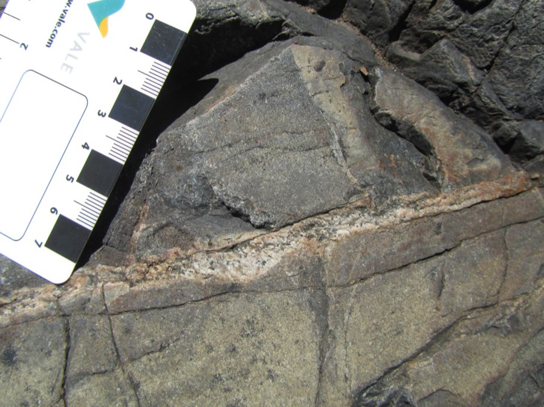
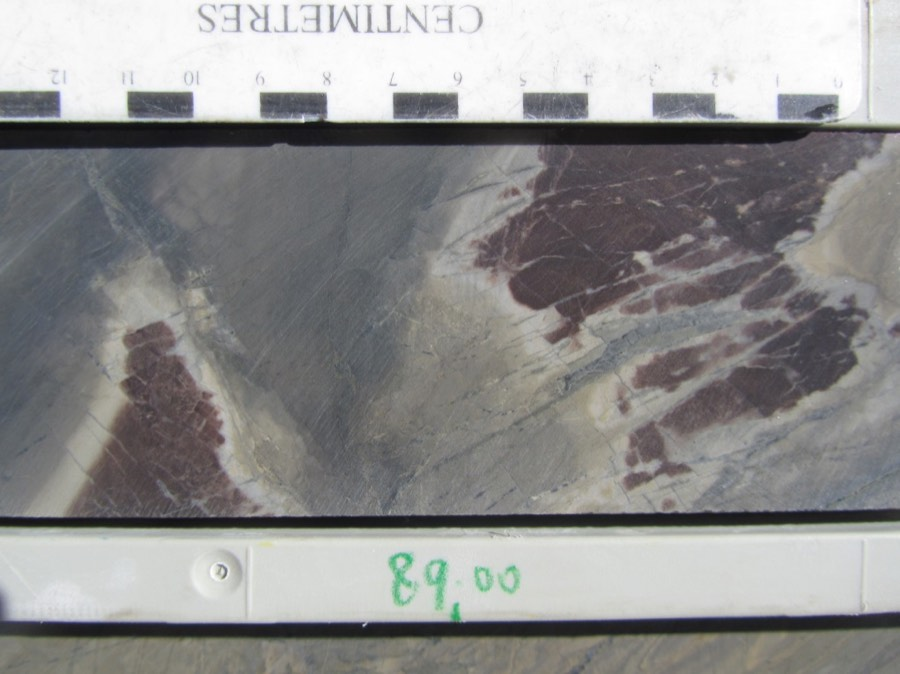
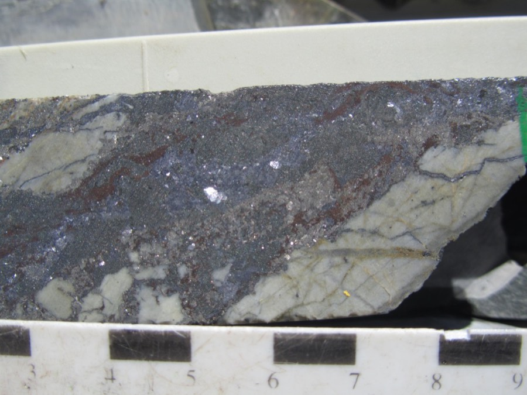
Why can you not use a large alteration halo to find veins like A? What does the pale rock in B and C tell you?
Show what I see
Vein A contains a lot of tin and tungsten, but its alteration zone is only a few centimetres wide. Hydrothermal vein deposits usually have very narrow alteration zones, one metre wide at most. So alteration cannot guide you to them from far away. But you do see bleaching. Acidic fluid removes iron and magnesium, and the silicon and aluminium that stay make the rock pale. Nothing was added; the rock is white because the colouring elements have gone. When you start to see bleaching like B, you are close to the vein. In C, the dark ore contains about 2000 ppm silver, and the host rock fragments inside it are completely bleached.
Isotopes can also point towards ore. In one regional study in northern NSW, sulphur isotopes in sphalerite, arsenopyrite, galena and pyrite changed steadily towards the more magmatic, tin-bearing part of the system. The values were around zero in the silver veins and negative towards the tin. So the isotopes showed the direction of the heat source, and which metal you were likely to find. lecture recording, 18 Sep
Self-test
Answer each question out loud or on paper before you open it. If your answer was right, claim the ounces.
Glossary and flashcards
These are terms that the lecture expects you to know, or only explains briefly. Tap a dotted word in the text to see its meaning.
Flashcards
Where this goes next
Breccias, veins and replacement textures (L3) are the pathways that these fluids used. Ore petrography (L4) teaches you to identify the oxide, supergene and primary minerals from this lecture under the microscope. Structural controls (L5) explain why faults are so often the feature that focused fluid or let oxygen go deep. The VMS and porphyry zoning models are covered in full in L10 and L11.